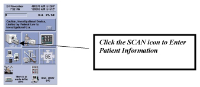
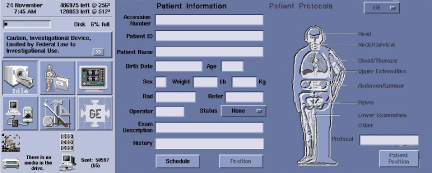
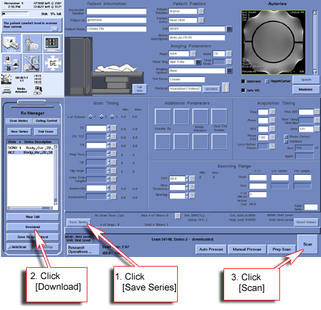
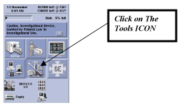
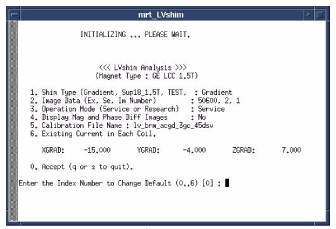
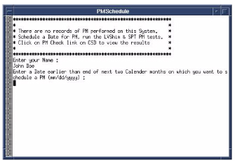

GE Exclusive Use Only
Direction 5440000, Rev# 5
Signa HDxt Service Methods
Module Version 9.0, Version Date 3/5/09
GE Exclusive Use Only |
| Required Persons | Preliminary Reqs | Procedure | Finalization |
|---|---|---|---|
| 1 | Not Applicable | 2 hours | Not Applicable |
Information covered in this material include:
(For 11.1 software only) PM Patch Information, PM Patch Information
LV Shim, LVShim
LV Shim Tool, LVShim Tool
System Performance Testing (SPT), System Performance Testing (SPT)
(For 11.1 software only) EPI White Pixel Mode PM, EPI White Pixel PM Mode
PM Check, PM Check
PM Schedule, PM Schedule
PM History, PM History
| Item | Qty | Effectivity | Part# | Manufacturer | |
|---|---|---|---|---|---|
| LVShim Phantom Assembly | 1 | - | - | - | |
| Nesting Plate Assembly | 1 | - | - | - | |
| DQA Phantom (for 11.x) or TLT Sphere (for 12.x) | 1 | - | - | - | |
| Head Coil | 1 | - | - | - | |
| Body Sphere and Loader | 1 | - | - | - | |
| Head Sphere and Loader | 1 | - | - | - | |
| Service Key | 1 | - | - | - | |
| Blank MOD for Saving Patches | 1 | - | - | - | |
| ||||
| Strong Magnetic Field! | ||||
| Ferrous materials can become dangerous projectiles in the presence of the magnetic field Produced by the Signa Magnet. | ||||
| Do not Bring any ferromagnetic tools or equipment into the magnet room. |
| Condition | Reference | Effectivity |
|---|---|---|
System release 11. 1 or higher and completion of a successful LVShim is a prerequisite to performing the SPT procedure, IBIS Specifications (11.1 & 12.x). For more information about LVShim, refer to the LVShim Process. | - | - |
| NOTE: | PM Patch Information does not apply to 11.0 or G3 software. |
PM Patch Theory
The PM Patch is a new function with 11.1 & 12.x. The purpose of the PM Patch is so the Field Engineer can load all applicable patches during the PM. A “Patch Template” is generated for all sites with 11.1 and 12.x software. The Patch Template contains a list of available patches for the software revision. The Patch Template will be downloaded to all 11.1 & 12.x sites that have connectivity (both Modem and Broadband) and placed in the /usr/g/insite/data directory.
For sites with Broadband connection, all applicable patches will be automatically downloaded into the /usr/g/insite/data directory.
For sites with Modem connection, the FE must obtain the necessary patches via the quarterly patch CD release or from the Engineering web site.
The FE must then install the patches onto the scanner during the PM. A Checksum is performed on downloaded patches to verify patch size. If a patch fails, the Checksum patch is deleted. The patches must then be installed.
The patch status will display on the MR Service Desktop screen in the lower right corner. (See Illustration 1 for 11.1 software and Illustration 2 for 12.x software. All patches under the “Mandatory” list must be loaded for IBIS to pass.
Illustration 1: MR Service Desktop (11.1 Software)

Illustration 2: MR Service Desktop (12.x Software)

Patch Install process:
Open the Common Service Desktop (CSD), and click on the PM tab.
Click on the PM icon shown in Illustration 1 (11.x) or Illustration 2 (12.x).
Click on [PM Patch Info]. (See Illustration 3.)
Illustration 3: Start PM Patch (12.x Screen Shown)

The tool displays the following information:
Patches that were downloaded and installed.
Patches that were downloaded to the scanner via Sweep, but not installed. (This option only applies to sites with a Broadband connection.)
Patches that need to be installed, but have not been downloaded.
Patches that may be out of date in the “Other” category. Example: The template file indicates that patch 12.0_M3A_07_rev g should be active, but there is a previous revision on the scanner, 12.0_M3A_07_rev b.
Trial patches that are unique to this system.
To install patches that were downloaded to the scanner, log out to the root level by doing the following:
Right mouse click on the background, select [Service Tools], then [System Restart]. The system will shut down.
When the Log In window displays, log in as root with the password, operator.
When the Guided Install menu displays (shown in Illustration 4), click on [Patches] to display the patches downloaded via Broadband in the Repository section.
Illustration 4: Patch Installation from Guided Install

Click on the Patches selection, and the downloaded patches will display in the Repository section. If necessary, refer to Installing Software Patches and Service Packs (12.x) or Installing Software Updates (11.x) for instructions on installing patches.
| NOTE: |
(For 12.x only)
After installation, patches
can be archived to MOD. To archive patches, install MOD and Select [Save to MOD] (shown in Illustration 5). This will
allow restoration of patches via MOD if the software crashes. Illustration 5: Patch Archive to MOD
|
Landmark the Shim Phantom as shown in Illustration 6. (At this time, only the Shim Phantom should be placed on the cradle.)
Illustration 6: Landmark for LVShim

Click on the Scan icon shown in Illustration 7 to launch the Patient Information window.
Illustration 7: Patient Information Window

Select [New Pt], and the Patient Information window will launch with the Patient Protocols shown in Illustration 8.
Illustration 8: Enter Patient Protocols

To run the LVShim procedure, type the following:
geservice in the Patient ID field and 300 in the Weight Lb field shown in Illustration 9
A Patient Name for the LVShim test that will be easy to find in the browser (Shim PM Test in this example)
Illustration 9: Patient Information

From the Patient Protocols window shown in Illustration 10:
Select [Service] from the pull-down in the upper right corner.
Click Other at the bottom. A Protocols selection box will display as shown in Illustration 11.
Illustration 10: Patient Protocols Window

From the Protocols selection box, select 0.19 LVShim in the Protocols column and LVShim Localizer, Cal:Syst in the Series column. (See Illustration 11.)
Illustration 11: Protocols Selection Box

Click [Accept] when the selections are correctly completed. (See Illustration 11.)
A pop-up message with the text, A change has been made to the Patient Position, Patient Entry, and/or coil. Please verify this selection and continue, will display in the Patient Information section of the console. Click [Apply All] to continue. (See Illustration 12.)
Illustration 12: Verify Changes to Patient Information

| NOTE: | For TwinSpeed, when the pop-up displays with the message, Whole or Zoom??, select [Whole]. |
From the Scan Prescription screen:
Click [Save Series] shown in Illustration 13.
Illustration 13: Scan Prescription Screen

Click [Auto Prescan] and verify that the Prescan values are within an acceptable range: R1 = 13 +/-2, R2 = 13 +/-2, TG 151-171.
While in the Center Freq. Fine (CFH) mode, verify that the frequency peak is centered in the display.
After locating the best signal, open the Frequency menu at the top of the Manual Prescan window, and select [Save Frequency] to save the new center frequency.
| NOTE: | If the prescan is not within the acceptable range, the issue must be resolved before continuing this procedure. |
Click [Scan] on the Scan Prescription screen to initiate the LVShim Localizer Cal:SYs scan. (See Illustration 13.)
To access the image browser, click the Browser icon, and the Browser window shown in Illustration 14 will display.
In the browser, locate the image created when the LVShim Localizer, Cal:Syst scan was performed.
Find the Patient Name in the Examination column (left column), and look for the Patient Name entered in Step 4 (example used in the Shim PM test).
Click on Shim PM Test, and the scans will now display in the right column of Illustration 14.
Illustration 14: Image Browser Window

Click on the appropriate series in the right column. If a new Patient Name was used in Step 4, there will only be one series (one image) with the description: Body,Cor,2 displayed in the right column at this time. (See Illustration 14.)
Double click on the image line in the lower window of Illustration 14 to automatically open the image shown in Illustration 15.
Illustration 15: Phantom Centering Check

Reposition the phantom, and run the LVShim Localizer, Cal:Syst until the phantom is properly centered.
| NOTE: | It is important to center the LVShim phantom in the magnet bore. In this example, the phantom should be moved slightly toward the front of the Magnet (toward the Table) as shown in Illustration 15. The goal is to overlap the center of the phantom and the display grid. |
Once the LVShim Phantom is properly centered, the LVShim scans can be acquired. To return to the Patient Protocols window, click the Scan icon shown in Illustration 7.
Click [New Series] on the Rx Manager shown in Illustration 13.
Click [Other] in the Patient Protocols window shown in Illustration 10. A Protocols selection box displays. (See Illustration 16.)
From the Protocols selection box, select 0.19 LVShim in the Protocol column and LVShim Scan in the Series column. (See Illustration 16.)
Illustration 16: Protocols Selection Box

Click [Accept] when the selections are correctly completed. (See Illustration 16.)
To start the LVShim scan, click in the following order: [Save Series] => [Download] => [Scan] as shown in Illustration 17. At the completion of the scan sequence, proceed to the LVShim Tool to verify the results.
Illustration 17: Start LVShim Scan

To access the Common Service Desktop (CSD), click on the Tools icon shown in Illustration 18.
Illustration 18: Tools Icon on CSD

Select [Service Browser] on the Service Desktop Manager to display the CSD home page.
When the CSD displays, click on the PM icon shown in Illustration 19.
Illustration 19: PM Icon on CSD

Click on the PM Assist folder in the left column of the PM home page shown in Illustration 20, Illustration 21, Illustration 22, and Illustration 23. This will expand the folder and show the PM selections.
Illustration 20: PM Assist Folder on PM Home Page

Illustration 21: Close Up of PM Assist Folder

Illustration 22: Expanded PM Assist Folder

Illustration 23: Close Up of Expanded PM Assist Folder

Click on LVShim in the expanded PM folder shown in Illustration 24 and Illustration 25. (The right side of the screen provides more details about LVShim and a link to start the LVShim PM tool.)
Illustration 24: LVShim Page

Illustration 25: Expanded PM Folder

Click on the link: Click here to start this tool shown in Illustration 24 to start the LVShim Tool. (See Illustration 26.)
| NOTE: | For TwinSpeed, when a pop-up displays with the message, Whole or Zoom??, select [Whole]. |
Illustration 26: Open LVShim Tool

Default Values for LVShim Analysis Tool:
Shim Type = Gradient
Image Data = This will auto fill with the latest LVShim Images.
Operation Mode = Service
Display Mag and Phase Diff Images = No
Calibration File = Iv_brn_acgd_3gc_45dsv
Existing Current In Each Coil
| NOTE: | Verify that the image data matches the exam series image scanned in Illustration 14. |
To start the analysis, press <Enter>. The results will be returned as follows:
(1, 0): -137.67 [10]. The Z1 limit is 10; the actual measure value is -137.67.
Grad Shim Has Not Passed! (See Illustration 27.)
Illustration 27: Grand Shim Has Not Passed

| NOTE: | Go to Step 9 if the message displayed is: Grad Shim Passed. |
LVShim Harmonic Correlation
1,0 = Z1, 2,0 = Z2, 3,0 = Z3, 4,0 = Z4, 5,0 = Z5 6,0 = Z6, 1.1 = Y, 1,-1 = X, 2,1 = ZY, 2,-1 = ZX 2,2 = X2-Y2, 2,-2 = XY, 3,1 = Z2Y, 3,-1 = Z2X 3,2 = Z(X2-Y2), 3,-2 = ZYX, 3,3 = Y3, 3,-3 = X3
Entering comments is allowed, but not required. Press <Enter> to continue.
To accept the new Grad Shim values. type y and press <Enter>. (See Illustration 28.)
Illustration 28: Accept Grand Shim Values

When the tool asks: Exit LVShim?, type n and press <Enter>. (See Illustration 29.)
Illustration 29: Remain in LVShim Tool

Return to the Scan Prescription screen, and click the [Scan] button. When scans are completed, return to the LVShim Tool shown in Illustration 30 and press <Enter>.
Illustration 30: Return to LVShim Tool

The LVShim tool will automatically select the 12 new images created by the last scan. Press <Enter> to start the analysis. (See Illustration 31.)
Illustration 31: Start LVShim Analysis

| NOTE: | Grad Shim is capable of reducing the X (1,-1); Y (1,1); and Z (1,0) harmonics. If any of the higher order harmonics are out of specification, a Supercom Shim may be required. |
In the example shown in Illustration 32, the LVShim has now passed. Depending on the system, it may take only one pass or several. Repeat the procedure until the system passes the LVShim test.
Illustration 32: Grand Shim Passed

Enter any applicable comments, and press <Enter>. (See Illustration 33.)
To reject the new current values, type n and press <Enter>. (See Illustration 33.)
Illustration 33: Reject New LVShim Values

When the tool asks: Exit LVShim?, type y and press <Enter>. (See Illustration 34.)
Illustration 34: Exit LVShim Tool

Landmark the phantom as described below, using the appropriate DQA Phantom. (Remove the LVShim Phantom for this test.) The process for proper landmark is:
Insert the DQA Phantom in the head coil, and turn on the alignment lights.
Move cradle so the alignment lights align with the center mark on the DQA Phantom.
(For 12.x) (For 11.x) Replace the TLT Sphere and loader in the head coil. Leave the DQA Phantom in place.
Insert the Body TLT Sphere and loader as shown in Illustration 35, and position them so the centering line is aligned with the alignment light.
| NOTE: | Illustration 35 shows a DQA phantom, but use a TLT Sphere and loader in the head coil for 12.x. |
Illustration 35: Phantom Positioning for SPT, PM Mode

From the CSD home page, select the [PM Mode] by clicking on it in the expanded PM folder on the left side of the page (shown in Illustration 36 and Illustration 37).
Illustration 36: SPT PM Page

Illustration 37: Select SPT PM Mode

Start the SPT tool by clicking on the link: Click here to start this tool. (See Illustration 36.)
When a window displays requesting selection of the Head Coil and Phantom Type, select the appropriate combination (pink for 3T and green for 1.5T) by clicking on the corresponding radio button, then click the [Start] button. (See Illustration 38 for 11.x and Illustration 39 for 12.x.)
Illustration 38: Head Coil Selection Screen (11.x)

Illustration 39: Head Coil Selection Screen (12.x)

The SPT screen shown in Illustration 40 will display. (For the PM SPT mode, all the tests are preselected and cannot be changed. The test takes just over one hour to complete.)
For more information on System Performance Tests, including phantom set up, follow the System Performance Test (SPT) procedure.
The remaining test time will display in the upper right-hand corner of the SPT screen shown in Illustration 40 and Illustration 41.
Illustration 40: Remaining Test Time

Illustration 41: Close Up of Remaining Test Time

Test progress and results will display in the lower window of the SPT screen shown in Illustration 42.
Important: Failures must be resolved and the SPT must be re-run before proceeding to the PM Check. SPT in PM mode executes on a TRM System in the Zoom mode only. If failures occur, verify that all subsequent iterations are run in Zoom mode for TRM Systems.
Illustration 42: Test Progress and Results

| NOTE: | The EPI White Pixel PM Mode applies to 11.1 and forward software only. |
Place an empty head coil on the cradle.
Landmark on the head coil.
Press <MOVE TO SCAN>.
From the CSD, select the PM tab, select EPI [White Pixel PM Mode], and click on the link: Click here to start this tool. (See Illustration 43
Illustration 43: Start EIP White Pixel PM Mode Tool

The tool will run through Head EPIWP PM first. When completed:
Move the head coil out of the way and perform Body EPIWP PM.
If the test stops before the tool has completed both head and body modes, view the error log to determine the troubleshooting path.
The EPI PM files generated by this tool can be found in the Report Manager Tool.
From the CSD, click on the [Utilities] tab, then [Report Manager]. Type the password: mrgo1.
Look for file type EPT, and find those files with the PM extension. (IBIS will be looking for these files to track Planned Maintenance completion.)
To verify that the PM completed successfully, click on PM Check. (See Illustration 44 and Illustration 45.)
| NOTE: | PM Check will only pass if the LVShim test passes within 24 hours of running a successful SPT. |
Illustration 44: Start PM Check

Illustration 45: Access PM Check

The PM Check window opens, and the information shown in Illustration 46 displays.
Illustration 46: PM Check Tool Opens

As seen in the example above, Body GRE Stab has a SEVERE failure.
This must be resolved for the PM Assist to be considered completed. If the FE does not resolve Severe issues within 21 days, the system will notify the operator of the problem.
For the PM Assist to be successful and complete, all test results must pass. (See Illustration 47.)
Illustration 47: Indication that Tests Passed

The PM Schedules tool will show the following status:
Date of last LVShim and SPT PM Mode runs on the system,
When the next Planned Maintenance is due,
Marginal/Severe failures remaining from last Planned Maintenance, and
When the clinical user will be notified of the remaining Severe failures
Click on PM Schedules in the expanded PM folder. (See Illustration 48 and Illustration 49.) The right side of the screen will provide more details about PM Schedules and a link to start the PM Schedules tool.
Click on the link: Click here to start this tool (shown in Illustration 48) to start the PM Schedules tool.
Illustration 48: Start PM Schedules Tool

Illustration 49: Access PM Schedules Page

If Planned Maintenance was not performed on this system, the following message displays in the tool: There is no PM performed on this system at least once. Schedule a date for PM, run SPT & LVS tests and hit PM Check link on CSD.
Enter your Name or initials, and press <Enter>. (See Illustration 50.)
Illustration 50: Enter Name or Initials

Enter the Next scheduled PM date, and press <Enter>. (See Illustration 51.)
Illustration 51: Schedule Next PM Date

The tool will display when the last PM was performed and when the next PM is scheduled. (See Illustration 52.)
Illustration 52: Last PM Performed and Date Next PM Scheduled

Enter the date the next PM will be performed, making sure the date is within the specified time limit provided by the tool, and press <Enter>. (See Illustration 53.)
Illustration 53: Enter Date for Next PM

Click on PM History in the expanded PM folder. (See Illustration 54 and Illustration 55.) The right side of the screen will provide more details about PM History and a link to start the PM History tool.
Illustration 54: Start PM History Tool

Illustration 55: Access PM History Page

Click on the link: Click here to start this tool. (See Illustration 54 to start the tool and Illustration 56 to open the PM History tool.)
Illustration 56: Information on PM History Page

The PM History displays the information shown in Illustration 56.
Current Date
Last Performed PM Date
Month Next PM due
Customer Scheduled PM Date
Field Engineer PM date
| NOTE: | Steps d and e should be the same date. If not, discuss PM scheduling with the customer immediately. |
Perform SaveInfo to reuse PM Assist tests results at a later date.